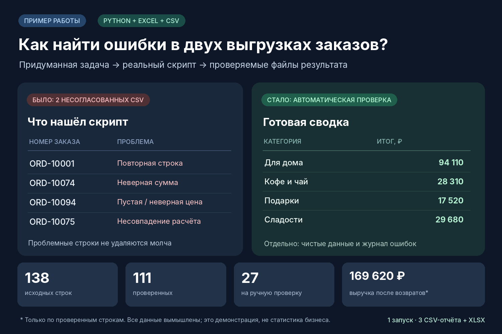

Как объединить две выгрузки без потери ошибок?
Вымышленный магазин имеет два CSV-файла. Скрипт на Python объединяет записи, проверяет номера, даты, суммы и статусы, затем отделяет проблемные строки, чтобы владелец мог проверить их вручную.

Результат
14 повторов, 9 несовпадений сумм и 4 ошибки формата. Выручка по условным правилам демо после возвратов: 169 620 ₽. Это выдуманные данные, не реальный доход.
Как убедиться?
Репозиторий содержит исходные CSV, скрипт process_orders.py, все четыре итоговых файла и готовый наглядный Excel-отчёт. Запустите python -m unittest discover -s tests -v в корне репозитория.
Границы
Демонстрация проверяет фиксированные форматы; реальные правила предприятия, налоговые расчёты и интеграции нужно согласовать отдельно. Ничего не передаёт в сеть. Дубликаты определяются по первому встреченному номеру.
Синтетический учебный кейс. Не кейс реального заказчика.